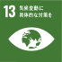
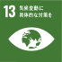

大同特殊鋼のCO2排出量削減の取組は、
ナゴヤドーム
9,075個分の森に
相当します。
大同特殊鋼のCO2排出量は、
1990年時点で年間約1,404kt-CO2。
様々な排出量削減策により、
2018年には年間約1,098kt-CO2と、
年間約306kt-CO2の削減に成功しています。
その削減量は、スギの木21,857,143本が
1年間に吸収する量と等しく
約43,714haのスギ林に相当します。
※杉の木1本の年間CO2吸収量：14㎏-CO2（関東森林管理局より）
※理想的なスギ生産林の密度：1haあたり500本（林野庁より）
ナゴヤドーム9,075個分
CO2排出量削減のための取組
POINT
カギは、「回転」にありました。
～スクラップ均一溶解技術～
炉を回転させることで
均一な溶解を実現し、省エネに貢献。
知多工場の150tアーク炉では、独自のスクラップ均一溶解技術を採用。炉を回転させながら溶解させることで、炉内の温度を均一にし、溶解しにくい部分を大幅に削減しました。これにより、従来の80tアーク炉対比15%のエネルギー原単位改善を達成しています。
［スクラップ装入後］
スクラップに熱を加える電極から遠い部分にコールドスポットが出来てしまう
［溶解中］
コールドスポット付近のスクラップが溶けにくい
［炉体旋回後］
炉を回転させることでコールドスポットに電極を近づける
POINT
効率アップの裏には、飽くなき挑戦が。
～製鋼工程の最適化～
電気炉容量大型化により
ロスを半減。
1度に製鋼できる量が増えれば、その分ロスの削減につながります。知多工場では、2013年に超大容量の150t炉が稼働。従来の80t炉と比べて1度に2倍近くを溶解できるため、ロスの大幅削減を実現しています。
連続鋳造システムにより、
鋳造ロスを削減。
知多工場では、高さ65ｍの縦型連続鋳造システム、NO.2CCが稼働しています。縦型に鋳造することにより内部成分の均質化をかなえることはもちろん、一度に鋳造できる量が飛躍的に増加し、鋳造ロスを大幅削減に貢献しています。
POINT
全工場で脱・重油を推進しています。
～都市ガスへの転換～
全工場で
重油をほぼ全廃。
大同特殊鋼では、環境負荷の高い重油から都市ガスへの切り替えを進めてきました。1995年に川崎工場で重油を全廃して以降、各工場で次々に重油削減を推進。現在ではすべての工場で重油をほぼ全廃し、都市ガスへの意向を実現しています。
石油樽874,213個分の
重油を削減
大同特殊鋼の1990年度の重油使用量は139,000kℓでしたが、現在は全廃されています。石油樽に換算すると874,213個分の重油を削減したことになります。
※石油樽＝159ℓとして
POINT
トラックから船へ、列車へ。
～モーダルシフト～
重量物の大量運搬が伴う当社では、輸送時に発生するCO2の削減も大きな課題でした。トラック中心だった製品輸送を列車や船へのシフトを進めています。列車へのシフトだけで年間約5000tのCO2を削減しています。
船の活用
雨天でも鋼材出荷ができる全天候型バースの設置により、自社製品の20%を内航船で輸送しています。また、仙台地区向けにはフェリー輸送を実施しています。
鉄道の活用
名古屋地区の向上から新潟地区、秋田地区に向けた鋼材輸送をトレーラーから鉄道輸送に全面転換しています。